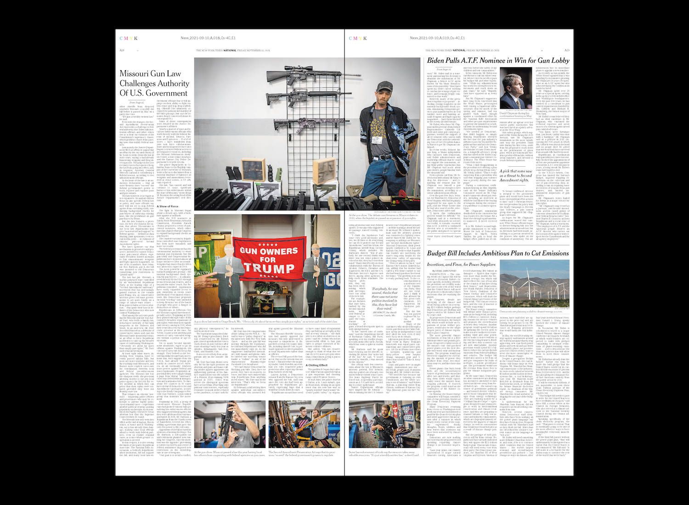
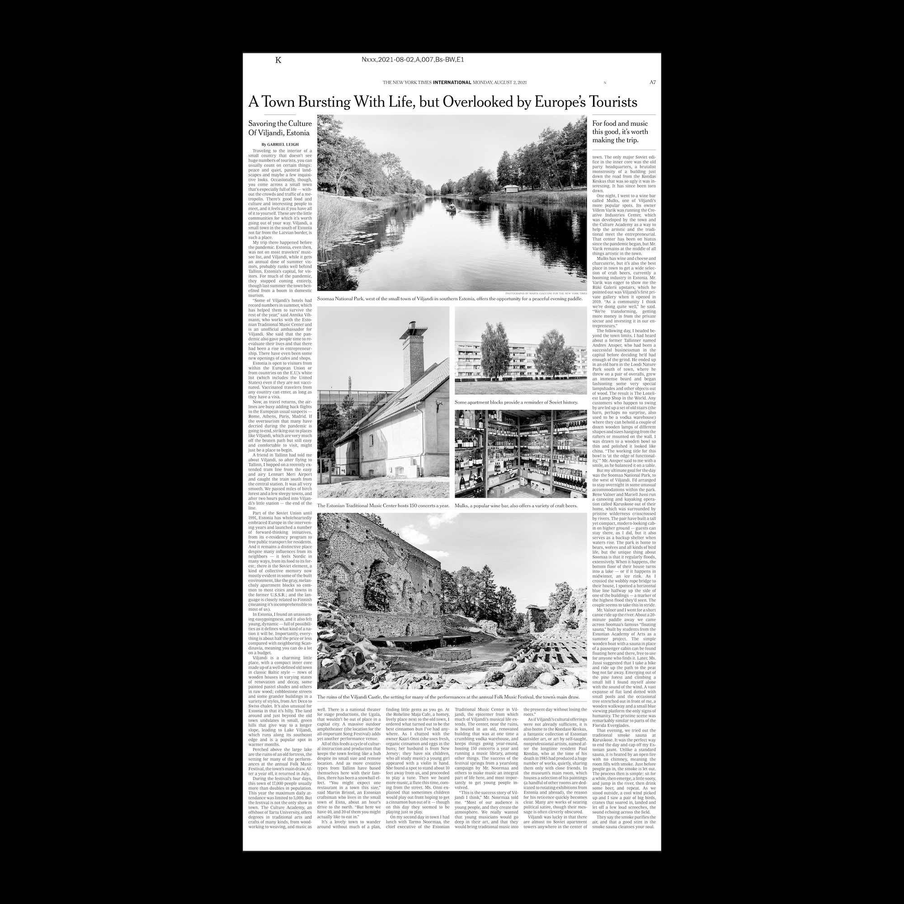
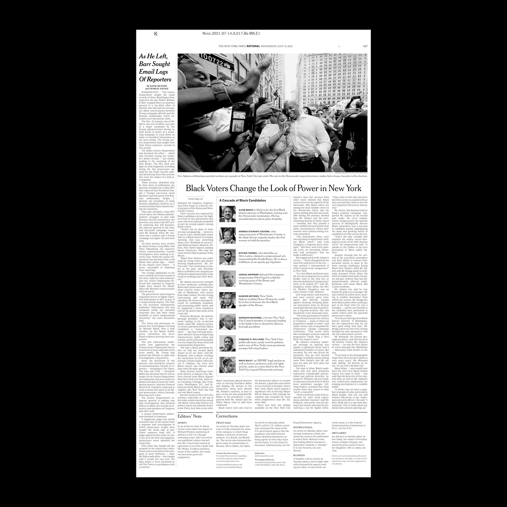
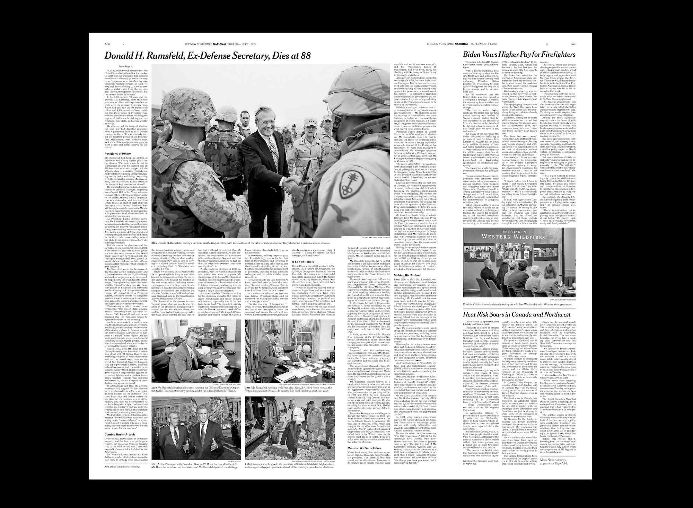
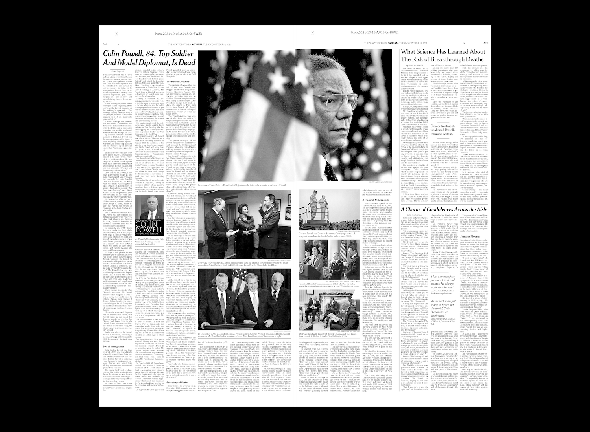
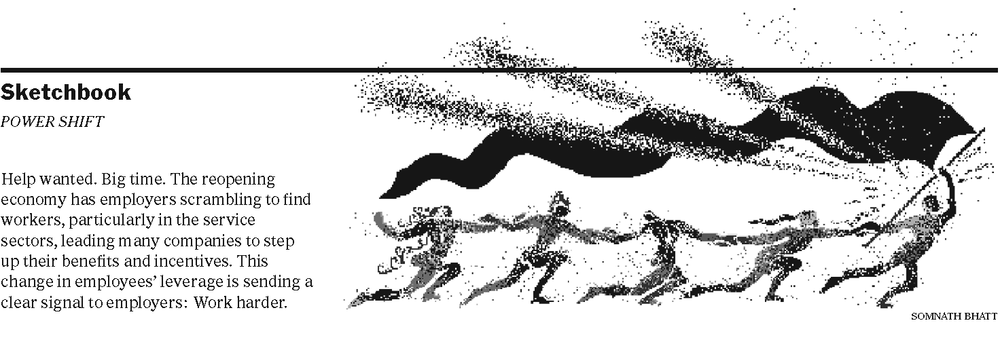
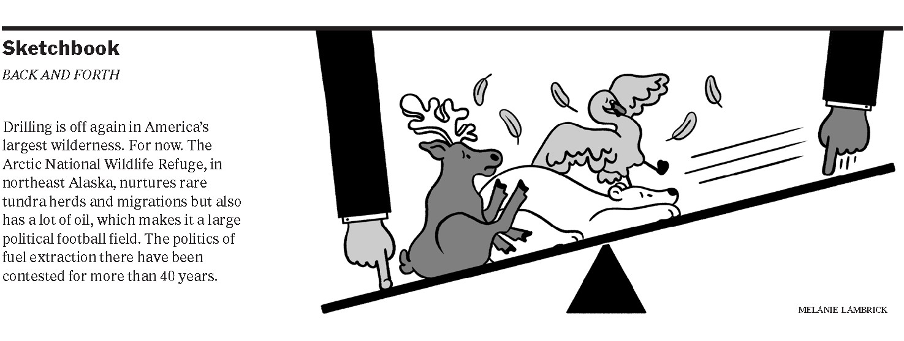
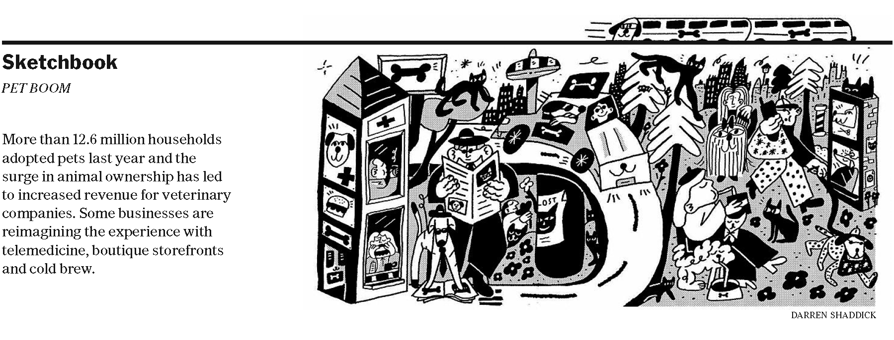
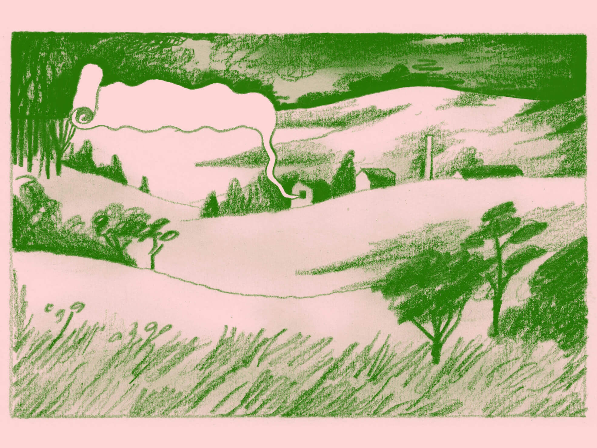

Design and Art Direction
The New York Times
Over more than a year and a half in the New York Times Newsroom, worked closely with the design directors of News Print Design to refresh the robust design system of the newspaper’s A and B-books. As the long-term project unfolded, tackled news design and art direction, from deadline projects to advance layouts to commissioned illustrations.
"Drought and Abundance in Iraq's Marshes".Words and Photographs by Emilienne Malfatto.
News Design
Select layouts for the New York Times.

"Inside Missouri's '2nd Amendment Sanctuary' Fight".Words by Glenn Thrush
"Population: One".Words and Photographs by Ruth Fremson

"A Town Bursting with Life, but Overlooked by Europe's Tourists".Words and Photographs by Gabriel Leigh

"Black Voters Change the Look of Power in New York".By Katie Glueck and Jeffery C. Mays

Obituary: Donald Rumsfeld.Words by Robert D. McFadden

Obituary: Collin Powell.Words by Eric Schmitt
Art Direction: Sketchbook
On Saturdays and Sundays, the Times prints an installment of 'Sketchbook', a standalone, black and white art spot on page 3. Sketchbook asks illustrators and artists to respond to current events in a visually compelling way.



Art Direction: Times Insider
Times Insider delivers behind-the-scenes insights into how Times journalism comes together. Each day, a new installment can be found online and on page 2 of the print newspaper.

Left: Antoine Cossé. Right: Holly Stapleton.


Left: Jordan Gale. Right: Daniel Prakopcyk